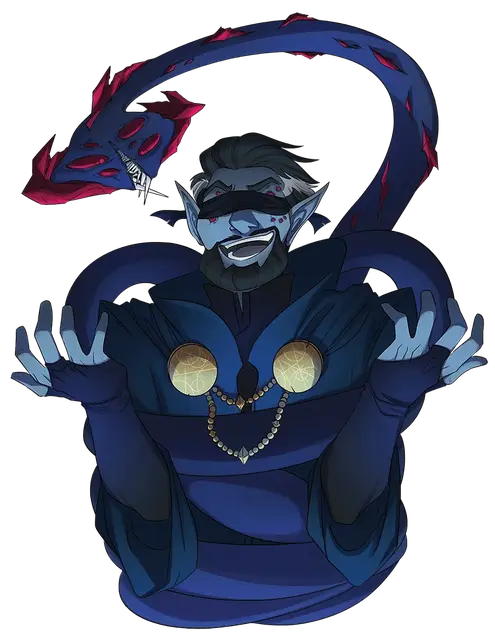

К'трисс Дроу'б
K'thriss Drow'b
Средний Гуманоид (Эльф), хаотично-нейтральный, именной НИП

Класс Доспеха 14 (проклёпанный доспех)
Хиты 44 (8к8 + 8)
Скорость 30 футов
| мод | спас | ||
|---|---|---|---|
| СИЛ | 8 | −1 | −1 |
| ЛОВ | 14 | +2 | +3 |
| ТЕЛ | 12 | +1 | +2 |
| мод | спас | ||
|---|---|---|---|
| ИНТ | 14 | +2 | +3 |
| МДР | 11 | +0 | +3 |
| ХАР | 18 | +4 | +7 |
Навыки Восприятие +2, Магия +4, Проницательность +2, Расследование +4, Религия +4
Чувства тёмное зрение 120 футов, пассивное Восприятие 12
Языки Небесный, Общий, Эльфийский, Подземный; может читать любые письмена
Опасность 3 (700 опыта)
Бонус мастерства +2
Особенности
Особое снаряжение. К'Трисс облачён в мантию звёзд [robe of stars] (учтенную в его статистике). Мантия позволяет ему накладывать следующие заклинания:
• 6/день: волшебная стрела [magic missile] (7 стрел)
Пробуждённый разум. К'Трисс может телепатически общаться с любым существом, которое он видит в пределах 30 футов, при условии, что это существо понимает хотя бы один язык.
Наследие фей. К'Трисс совершает с преимуществом спасброски от очарования, и магия не может его усыпить.
Врождённое колдовство. Базовой характеристикой К'Трисса является Харизма (Сл спасброска от заклинания 14). Он восстанавливает свои израсходованные ячейки заклинаний, когда заканчивает короткий или продолжительный отдых, и ему известны следующие заклинания колдуна:
• Неограниченно: пляшущие огоньки [dancing lights], маскировка [disguise self];
• 1/день каждое: тьма [darkness], огонь фей [faerie fire].
Чувствительность к солнечному свету. Находясь на солнечном свету, дроу совершает с помехой броски атаки, а также проверки Мудрости (Восприятие), полагающиеся на зрение.
Использование заклинаний. К'трисс является заклинателем 5-го уровня. Его базовой характеристикой является Харизма (Сл спасброска от заклинания 14, +6 к попаданию атаками заклинаниями). У него подготовлены следующие заклинания колдуна:
• Заговоры (неограниченно): леденящее прикосновение [chill touch], мистический заряд [eldritch blast], починка [mending], фокусы [prestidigitation], терновый кнут [thorn whip], злая насмешка [vicious mockery];
• 1-3 уровень (2 ячейки 3-го уровня): диссонирующий шёпот [dissonant whisper], полёт [fly], сглаз [hex], туманный шаг [misty step], послание [sending], дребезги [shatter].
Действия
Мультиатака. К'Трисс совершает две атаки Серпом.
Серп. . Рукопашная атака оружием: +4 к попаданию, досягаемость 5 футов, одна цель. Попадание: 4 (1к4 + 2) рубящего урона.
Описание
”Все вещи делятся на мясо и рты, но даже рот - это просто мясо".
Колдун дроу К'трисс Дроу'б является впечатляющей фигурой в качестве мирского представителя Ура - ненасытного, непостижимого и в значительной степени равнодушного древнего существа из-за пределов реальности. Подключенный к этой темной силе, участник из команды "С" видит все существование как головоломку, которую нужно разгадать, и он одержим существенным отсутствием смысла и цели в структурах так называемой "реальности". Тем не менее, учитывая все обстоятельства, он чаще всего вежлив и приветлив. Потому что после долгой карьеры авантюриста он понимает, что не может позволить себе наживать еще больше врагов.
Учитывая его голубой оттенок кожи, слухи предполагают, что К'Трисс имеет смешанное происхождение, но никто не знает наверняка. Будучи молодым и сомневающимся приверженцем Лолс, он наткнулся на фрагменты реликвии, известной как Чёрный алтарь, открыв ему их бесконечные истины и шокировав черные как смоль волосы дроу. Его подходящая "борода" на самом деле представляет собой медленно растущую колонию инертных спор, которая, по мнению К'Трисса, придает ему выдающийся вид. Обладая тревожными и асимметричными кристаллическими глазами, он часто носит повязку на глазах, чтобы избавить других от своего облика, видя при этом глазами своего фамильяра.
Щупальца играют большую роль в колдовстве К'Трисса, когда они тащат его по небу, при использовании магии для полёта [fly], или проявляются в темной, покрытой присосками форме, когда он накладывает заклинания, такие как терновый кнут [thorn whip]. И когда враги слышат, как К'Трисс шепчет глубокие истины Ура - обычно что-то о том, что в геологическом масштабе времени желания каждого бессмысленны, - они вспоминают это.
Фамильяр К'трисса, Лиготти [Ligotti], - полуразвалившийся остаток атакующего щупалеца, порожденного богом-покровителем колдуна-заступника. Хотя Лиготти совершенно чужд материальному плану (и часто появляется в форме посоха).